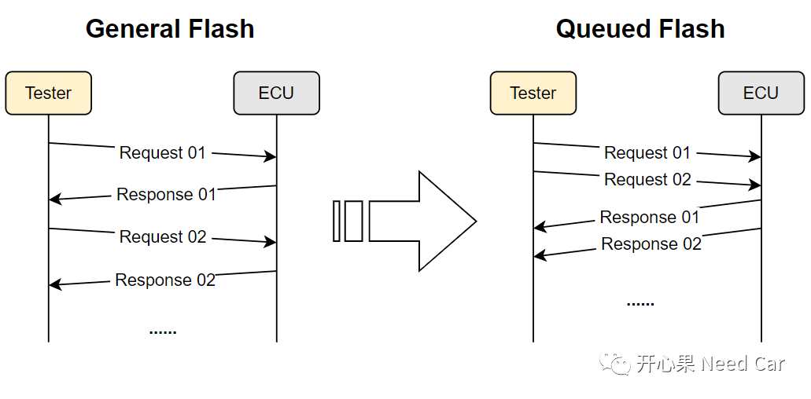
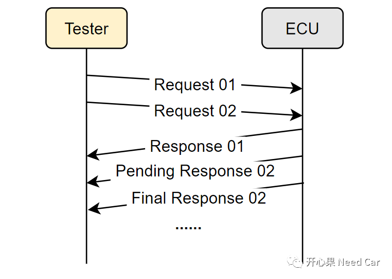
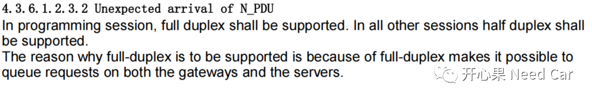

开心果 Need Car · 2022-12-04T19:16:00+08:00 · 微信原文
队列刷写（Queued Flash）,在标准的规范中，没有太多的输入信息。国内要求队列刷写的OEM也不多，做过队列刷写的朋友，可能或多或少的有些疑问。本文要和大家聊一下队列刷写中的两个问题：
队列刷写的特点
Application中是否需要支持队列刷写？
Q1：Queued Flash特点是什么？
答：传统的诊断刷写流程是一个“乒乓”过程，即：一问一答。为了加速软件的刷写速度，节省诊断请求时间，提出了队列刷写（Queued Flash），即ECU在处理一帧诊断请求的同时，可以再缓存一帧诊断请求，如下所示：

Queued Flash特点：
队列刷写是对同一个ECU而言的，具体说，针对同一个CanID。当ECU包含多个总线，多个Node时，每一个Node对应一个唯一CanID；
当响应存在Pending（0x78）时，Pending响应和最终（Final）响应需要按照顺序执行，如下所示：

Q2：Application下是否需要支持队列刷写？

这个需求如何理解呢？个人看法：编程会话（$10 02/82）下，需要支持全双工，如果支持全双工，需要进一步支持队列刷写。如果在非编程会话下，需支持半双工。半双工也就是诊断中的"乒乓"过程。工程中，Application下，一般支持默认会话（$10 01）、拓展会话（$10 03），或者OEM自定义的其他会话，不支持编程会话。进入编程会话，意味着程序进入了Bootloader程序。所以，这样分析，即：Application下，支持半双工，如果不支持全双工，即可不支持队列刷写。
往期精彩回顾